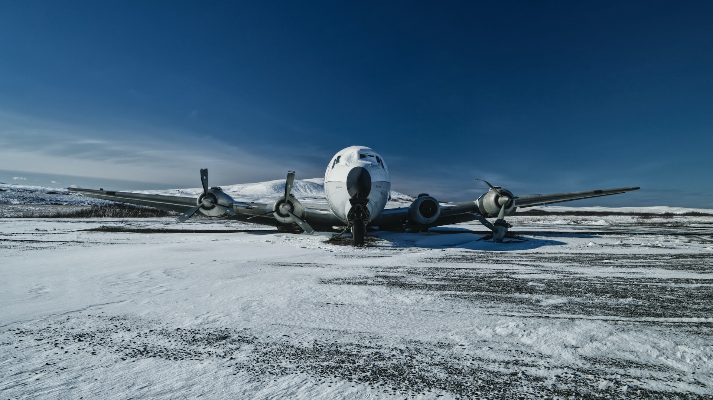
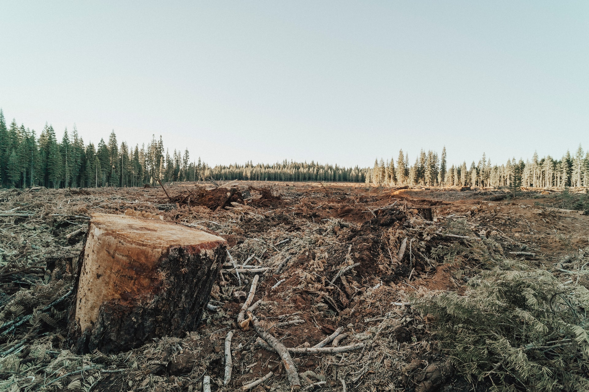
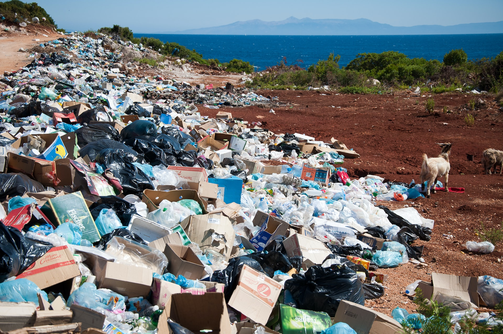
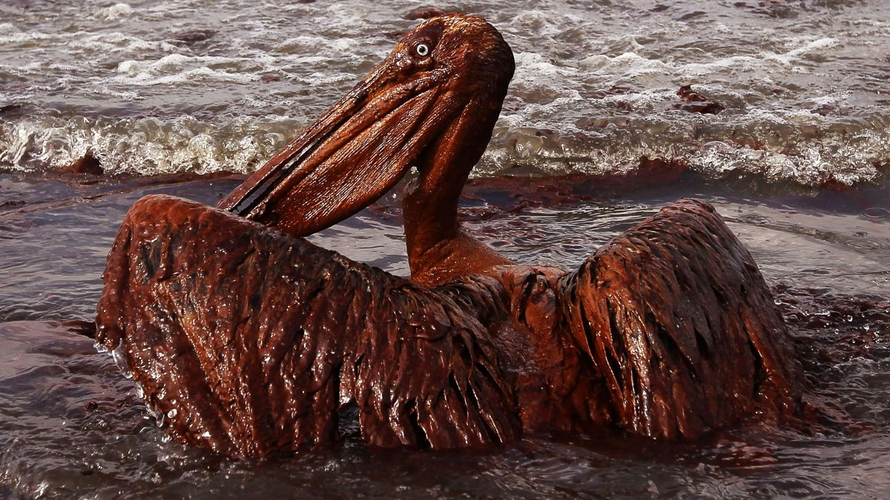

No habrá más vuelos
Compañía internacional de vuelos cancela todos los viajes durante los próximos 3 días débido a las extremas condiciones climaticas. La compañía aseguró que las rutas fueron reprogramadas para que los vuelos se realicen lo antes posible, y las personas que deseen un reembolso podrán obtenerlo a través de la página web.
Deforestación total
Alrededor de 98 millones de hectáreas de bosque se vieron afectadas por incendios en 2015; esto ocurrió principalmente en la zona tropical, donde ese año el fuego quemó alrededor del 4 por ciento de la superficie forestal total. Más de dos tercios del área de bosque total afectada se encontraba en África y América del Sur.
Basta de plásticos
Un grupo de chicos crea su propia ONG para combatir la contaminación excesiva de plásticos, que en ecosistemas acuáticos ha crecido considerablemente en los últimos años y se prevé que se duplique para 2030, con consecuencias nefastas para la salud, la economía, la biodiversidad y el clima. Confirmaron la necesidad de una acción mundial urgente.
Peligro con el petroleo
Cuando las aves playeras se cubren en petroleo, sus plumas se vuelven inútiles para mantenerlas aisladas y calientes. Las aves también se acicalan instintivamente para eliminar cualquier cosa de sus plumas, lo que las expone a ingerir cantidades tóxicas de petroleo. Otros animales que también están expuestos a este peligroso problema son; lobos marinos, delfines, ballenas, entre otros.